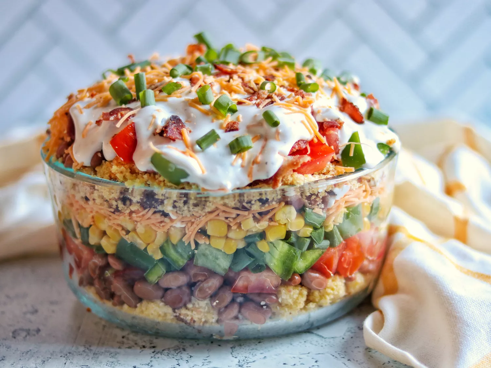

Home
Cornbread Salad

This crowd-pleasing cornbread salad is quite unique but tastes great!
Ingredients
Cornbread:
- cooking spray
- 1(16 ounce) pack corn bread mix
- 1 1/2 cups water
Salad:
- 10 slices bacon
- 1 1/2 cups sour cream
- 1 1/2 cups of mayonnaise
- 1 (1 ounce) package ranch dressing mix
- 2 (15 ounce) cans pinto beans, drained
- 3 tomatoes, chopped
- 1 cup chopped green bell pepper
- 1 cup chopped green onion
- 2 (11 ounce) cans whole kernel corn, drained
- 2 cups shredded Cheddar cheese
Directions
-
Make the cornbread: Preheat the oven to 375 degrees F (190 degrees C).
Spray the bottom and sides of an 8x8-inch pan with cooking spray.
-
Combine cornbread mix and water in a large mixing bowl until smooth;
pour into prepared pan.
-
Bake in the preheated oven until a toothpick inserted in the center
comes out clean, 30 to 35 minutes. Let cool; crumble and set aside.
-
Meanwhile, make the salad: Place bacon in a large skillet and cook over
medium-high heat, turning occasionally, until evenly browned, about 10 minutes.
Drain bacon slices on paper towels.
-
Whisk sour cream, mayonnaise, and dressing mix together in a medium bowl.
-
Crumble 1/2 of the cornbread in the bottom of a large serving dish.
Evenly layer with 1 can of pinto beans, 1/2 of the tomatoes, 1/2 cup
green bell pepper, 1/2 cup green onions, 1 can of corn, 1 cup of cheese,
1/2 of the bacon, and 1/2 of the sour cream mixture. Repeat the layers.
Cover and chill for at least 2 hours before serving.